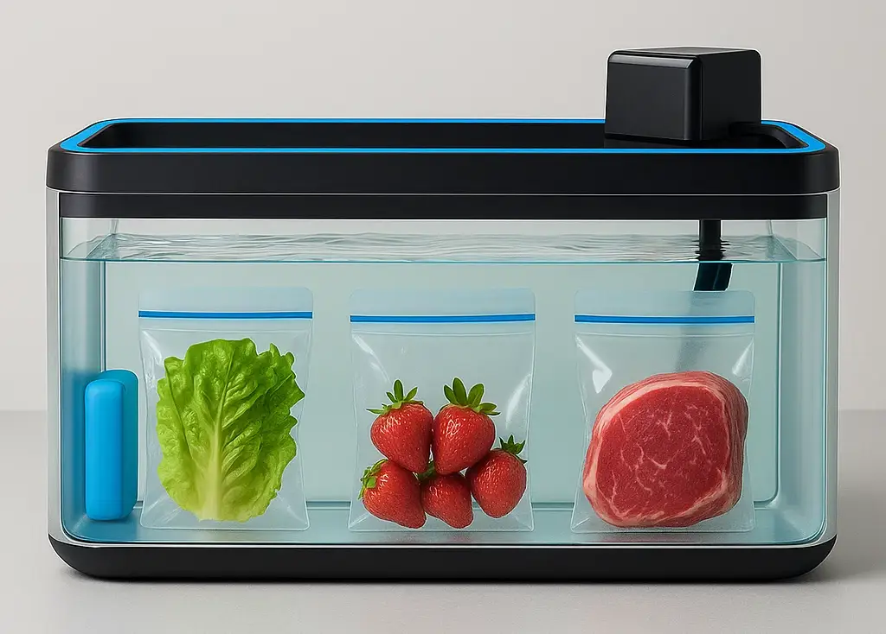
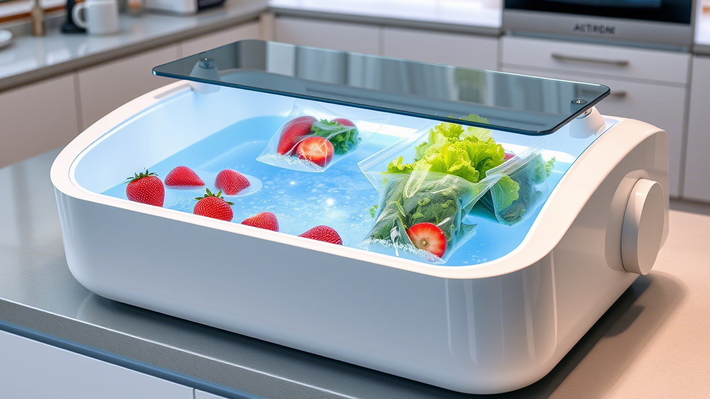
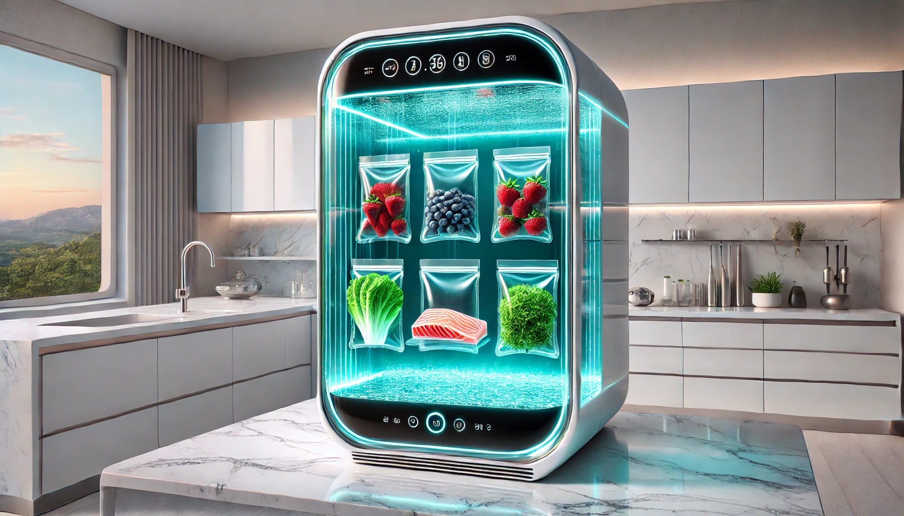

Liquid Fridge: Another Food Preservation System
Liquid-based food preservation system that extends freshness for weeks by eliminating oxygen exposure.
Why (the problem)
- Traditional refrigeration consumes excessive energy and takes up significant space
- Food spoils quickly due to oxygen exposure, leading to waste and frequent grocery trips
- Current preservation methods are expensive and inaccessible to many households in developing countries
- Rising food costs make food waste economically painful for families

AI generated concept
What (the idea)
A horizontal aquarium-like tank filled with water where food is stored in special air-expelling bags, creating a low-oxygen environment that dramatically slows spoilage - affordable food preservation for everyone. How (v0 / MVP)
The smallest version that proves value: a 20-gallon glass aquarium tank ($50-100) with water, food-safe zip-lock bags, ice packs for cooling, and a small water pump ($20-30) for circulation. Users can test preservation effectiveness with common foods like lettuce, strawberries, and meat within days.

AI generated concept
How (tech/ops)
- Hardware: Standard aquarium tanks (20-30 gallons), food-safe plastic bags with one-way valves
- Cooling: Ice packs (free) or mini aquarium chiller ($50-100) for temperature control
- Water system: Tap water with food-grade salt/vinegar, small circulation pump
- Maintenance: Water changes every 2-3 weeks, tank cleaning with soap and water
- Distribution: Partner with aquarium suppliers and kitchen retailers
- Cost structure: $100-150 total setup, comparable to budget mini fridges
Prior art & investigations
- Vacuum sealing: Expensive machines ($100-300), single-use bags, complex operation
- Sous vide storage: Professional technique but requires specialized equipment and skills
- Traditional preservation: Canning, pickling, dehydrating - time-intensive and changes food texture
- Research findings: Oxygen is primary spoilage factor; water displacement effectively removes air
- Market gap: No affordable, accessible low-oxygen food storage for home use

AI generated concept
Risks & open questions
- Water contamination: Mitigated by circulation pump, salt/vinegar additives, and regular water changes
- Food safety regulations: Need to research FDA guidelines for water-based food storage
- Bag durability: Testing required for various bag materials and valve designs under water pressure Next step & call to action
Next step:
Build MVP prototype with 20-gallon tank and test preservation times with 5 common foods over 30 days.